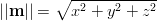
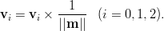
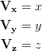
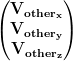

Block 1.2 - Length and Angles
In this chapter lengths and angles are discussed. If you've used Ogre or any modern 3D engine before, then it is more than likely you've encountered the Vector and Quaternion classes.
Lengths and Distances
We should all know what lengths are, we use them all day. From estimating the distance when throwing a ball, to measuring the length of your waist to see if you will fit into that pair of trousers from when you were younger.
Mathamatically they are described as the differences between two points in space. The difference between lengths and distances is, the subject matter. Lengths are the difference between two points of the same connected body; a car, house, or a person. Distances are between two points of that are not connected; two cars, two houses, or two people.

Question 1.1
John and I are going to football practise for the first time. After looking at the map, we find it is about 1000 metres away. Halfway through, we notice that the football field is only 30 metres across someone's garden.
If we hop over the garden; How what is the distance we would of walked, and how much of the journey did we save?
Our term of "length" are still pretty generic. There are many variations of the word; Breadth, Width, Thickness, even Radius and Diameter could be lengths.
So what is exactly a length? Well, a measurement of a dimension of an object is a good definition, a better one would be it's the length between two extreme points of an object. This tree is three metres tall, that house is 12 metres wide, my car's rims are 50 centimetres in diameter.

In NxOgre, you'll be using different types of lengths to describe different shapes. You've already met a the Box, in the above diagram, but here is a list of the other shapes that uses lengths:
| Shape | Lengths used |
|---|---|
| Box | Width, Length and Height |
| Sphere | Radius |
| Capsule | Radius and Height |
| Wheel | Radius |
| HeightField | Width and Length |
Some shapes don't use lengths atll; Convex and Triangle Geometries for example. Ground shape is the most peculiar it uses distances and directions!
You'll meet more of the shapes in a later chapter, and blocks.
Question 1.2
My sister and I are trying to break a world record by stacking wooden blocks on top of each other into a tower. We are not sure how high the tower is. But we know how many blocks we used, and the width and length of the tower.
Blocks 15000
- Tower size
- Width 25cm
- Length 25cm
- Block size
- Width 5cm
- Length 1cm
- Height 1.5cm
Assuming each block is the same size. How high is the tower?
Vectors
To express lengths, distances and of course directions in NxOgre, we use a vector. If you've ever taken an advanced course in Mathmatics then yes, the vector is exactly like a vector.
At first glance a vector is just a point in space, as it carries the x, y, z components with it. Depending on the use of the vector it may be a coordinate, size or a normal.
Coordinates
Coordinates you should be already familar with. They are simply distances in each dimension away from another point.

Coordinates may be refered in "Global Frame" or "Local Frame", the difference being is how they refer to an arbitrary point. In Global Space, a giraffe paperweight's position would be in reference to the world center (0,0,0), where as in local space the paperweights position would be refered to where the paperweight is placed upon or attached to; i.e. a piece of paper.

In NxOgre, nearly everything is referred to in the Global frame, but in Ogre due to the use of the Scene Graph global and local frame are used frequently.
Normals
Normals can represent velocities, directions and direction of faces of triangles.
Although normals are vectors, they are technically two components; a magnitude (length of the vector), and normalised direction. The magnitude is the length of the line between the world center (0,0,0) to the normal position; e.g. (10,12,5) and the direction is the norm of the vector:
| Component | Operation | Function |
|---|---|---|
| Magnitude | 
|
Vec3::magnitude |
| Direction | 
|
Vec3::normalise |
Sizes
Sizes in NxOgre are expressed in according to the subject matter. Boxes require three dimensions; Width, Length, and Height. Capsules only require a radius and height so that is just two, and Spheres just one; a radius.
When giving a size to NxOgre, you will need to use the correct data type. These would be Vectors with three components, two components or a single Real type. In some cases, you can use an alternate with three Reals or two Reals if you prefer.
As a size may use upto dimensions to describe it's size, it is useful to know which dimension in the contex of a size means.
Using a capsule as an example; X is the first dimension, so it's usually the distance to the end of the shape to it's centre.A capsule's radius is the first dimension, so X is the capsule's radius. Y is the second dimension, and we commonly use Y as up then Y is the shape's height. Z is the last dimension, and not used in a capsule. But it's usually the shapes length.
NxOgre::Vec2 and NxOgre::Vec3
In NxOgre, Ogre and PhysX classes are reserved to hold two or dimensional components; x, y and sometimes z, these are Real types. It is unlikely you'll use the PhysX version of these, but NxOgre's are called Vec2 and Vec3. Ogre has it's own version called Vector2 and Vector3. There is no "Vec1" class as this would be a Real type.
For now, we will concentrate on the most popular type of Vector; Vec3:
namespace NxOgre { class Vec3 { public: Vec3() : x(0), y(0), z(0) { } Vec3(const Vec3& vec3) : x(other.x), y(other.y), z(other.z) // ... Real x, y, z; }; }
The vector's components; x, y and z are left pubically open. It would be inefficent to have setX, getX, setY, getY, setZ and getZ functions, and as there is no such thing as a "Bad Vector" from the user giving an wrong value, the user can safely do any math operations upon them.
However, there are a number of in built helper functions that can be used.
| Function | Operation | Pseudo Code |
|---|---|---|
| set(x,y,z) | 
|
x := x y := y y := z |
| operator= (other) | 
|
x := other.x y := other.y z := other.z |
| operator+ (other) | x := x + other.x y := y + other.y z := z + other.z |
|
| normalise |  |
Real m := magnitude m := magnitude x := x * 1 / m y := y * 1 / m z := z * 1 / m return m |
| magnitude | SQRT(x*x + y*y + z*z) |
|
| cross(other) | Vec3 out
out.x := y * other.z - z * other.y
out.y := z * other.x - x * other.z
out.z := x * other.y - y * other.x
return out |
|
| dot(other) | Real out
out := x * other.x
out := out + (y * other.y)
out := out + (z * other.z)
return out |
|
| mid(other) | Vec3 out out.x := (x + other.x) / 2 out.y := (y + other.y) / 2 out.z := (z + other.z) / 2 return out |
|
| mid(other) | Vec3 out
out := self - other
return out.magnitude |